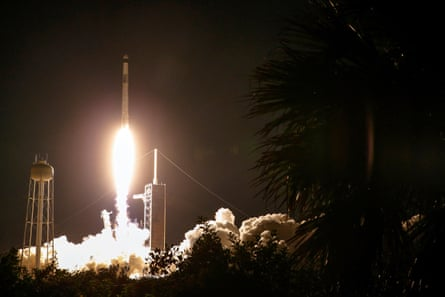

A US commercial mission carrying crew from India, Poland and Hungary blasted off to the International Space Station on Wednesday, taking astronauts from these countries to space for the first time in decades.
Axiom Mission 4, or Ax-4, launched from Nasa’s Kennedy Space Center in Florida at 2.31am local time with a brand-new SpaceX Crew Dragon capsule riding atop a Falcon 9 rocket.
The vehicle is scheduled to dock with the orbital lab on Thursday and remain there for up to 14 days.
Onboard the spacecraft were the Indian test pilot Shubhanshu Shukla, the mission specialists Sławosz Uznański-Wiśniewski of Poland and Tibor Kapu of Hungary , and the US commander Peggy Whitson, a former Nasa astronaut who now works for the company Axiom Space, which organises private spaceflights among other things.
The last time India, Poland or Hungary sent people to space, their current crop of astronauts had not yet been born – and back then they were called cosmonauts, as they flew on Soviet missions before the fall of the iron curtain.
The Falcon 9 rocket lifting off with the Axiom-4 crew onboard.Photograph: Steve Nesius/Reuters
Shukla became the first Indian in space since Rakesh Sharma, an air force pilot who travelled to the Salyut 7 space station in 1984 as part of a Soviet-led initiative to help allied countries access space.
India’s space agency, ISRO, sees this flight as a key stepping stone towards its own maiden crewed mission, planned for 2027 under the Gaganyaan programme, meaning “sky craft” in Hindi.
The Indian prime minister, Narendra Modi, hailed the successful launch of the Ax-4 space mission. “[Shukla] carries with him the wishes, hopes and aspirations of 1.4 billion Indians. Wish him and other astronauts all the success!” he wrote on X.
While onboard the ISS, Shukla is widely expected to speak with Modi, in a soft-power moment aimed at stoking national pride.
All three countries are footing the bill for their astronauts. Hungary announced in 2022 it was paying $100m for its seat, according to spacenews.com. India and Poland have not disclosed how much they are spending.
“We’ve got this! Poland has reached for the stars,” the Polish prime minister, Donald Tusk, said on X, alongside a video himself watching the launch on a screen at the Copernicus Science Centre in Warsaw.
“Who knows how many future Polish astronauts watched Sławosz’s launch with me? Everyone was very excited and very proud,” Tusk said in another post, which included a photo of him sitting next to several children at the science centre.
Tusk watching the launch at the Copernicus Science Center in Warsaw.Photograph: Radek Pietruszka/EPA
Multiple issues delayed the launch of the Ax-4 mission, originally slated for early June. It follows an explosive online spat between the US president, Donald Trump, and the SpaceX chief, Elon Musk, the world’s richest person and until recently Trump’s ally and adviser.
Trump threatened to pull SpaceX’s federal contracts worth tens of billions of dollars, prompting Musk to threaten an early retirement of Dragon, the only US spacecraft currently certified to carry astronauts to the ISS.
Musk walked back the threat a few hours later and in the days that followed sought to distance himself further, writing on X that he had gone “too far”.
Any rupture between SpaceX and the US government would be massively disruptive, given Nasa and the Pentagon’s reliance on Falcon 9 and Falcon Heavy to send up crew, cargo, satellites and probes. But for now, analysts believe both sides are too entangled to risk a serious break.
The Ax-4 flight marks the debut of the fifth and final Crew Dragon vehicle, which will be named once it reaches orbit, joining Endeavour, Resilience, Endurance and Freedom in the active fleet.
SpaceX ultimately plans to phase out its current vehicles in the 2030s in favour of Starship, its giant next-generation rocket currently in development.
Ax-4 will carry out about 60 experiments, including studies on microalgae, sprouting salad seeds, and how well microscopic creatures called tardigrades survive in space.